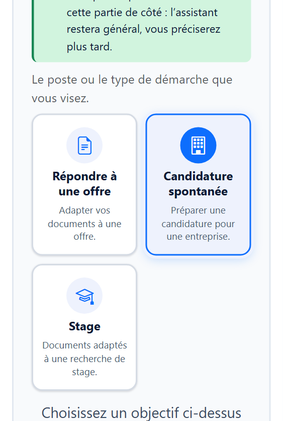
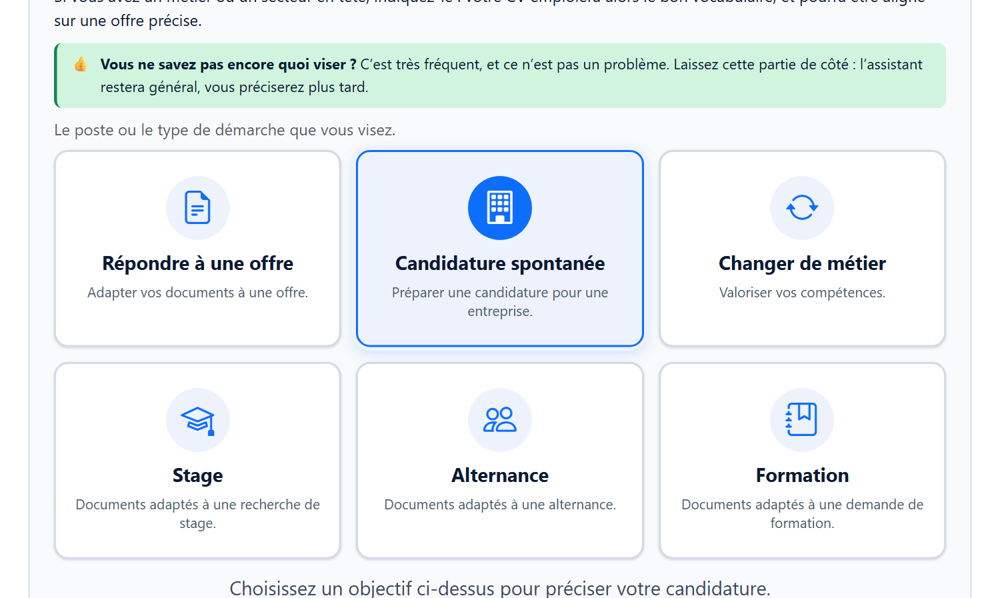
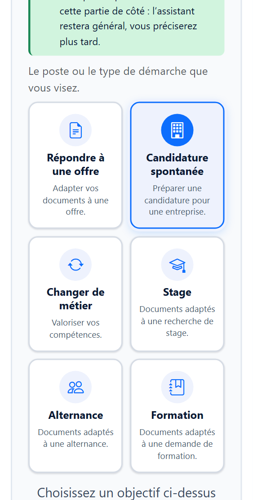

Récit « Raconter mon parcours » : de trois à six cartes d'objectif
Écran « Préparer », partie 2 « Ce que vous visez ». Les images viennent du vrai rendu de l'application. Dans les images « six cartes », les trois cartes ajoutées sont fabriquées dans la page avec la même mise en forme : le code de l'application n'est pas modifié. La mise en valeur de la carte du milieu est l'animation d'invitation de l'application, pas un choix. Rien n'est codé.
Aujourd'hui : trois cartes Répondre à une offre, Candidature spontanée, Stage

Téléphone (375 px)
Proposé : les six cartes, dans l'ordre commun à toute l'application ajoute Changer de métier, Alternance, Formation

Ordinateur : trois cartes sur deux lignes
Téléphone : deux colonnes, trois lignes
Ce que j'ai lu dans le code avant de proposer
- Simple : les cartes viennent de la liste commune
OBJECTIF_CHOIX_CANDIDATURE. Le récit n'en montre que trois à cause d'une liste d'identifiants locale (CARTES_OBJECTIF_DECOUVERTE). Il suffit de montrer les six, dans l'ordre de la liste commune, sans copie.
- Simple : le panneau sous les cartes est déjà celui de la lettre et des CV. Il sait traiter les six objectifs : « Changer de métier » comme « Répondre à une offre » (recherche du métier), « Alternance » et « Formation » comme « Stage » (durée, dates, horaires).
- Déjà prévu : le modèle de consigne du récit cite déjà « reconversion, stage, alternance, immersion, formation » comme types de candidature, et le calcul de stratégie du récit tient déjà compte de « Changer de métier ». Rien à changer dans les consignes.
- Revient sur une décision : le 19/09/2026, vous aviez retiré ces trois cartes du récit parce qu'elles supposent un CV existant. La nouvelle décision du 27/10/2026 les remet. « Changer de métier » (« Valoriser vos compétences ») s'accorde bien avec un récit qui part de zéro.
- Risque moyen : je n'ai lu ce panneau que dans le code. Je dois vérifier à l'écran, dans le récit, que « Changer de métier », « Alternance » et « Formation » ouvrent le bon panneau, gardent ce qu'on a saisi quand on revient, et que « Continuer » reste bloqué tant que le panneau n'est pas complété.
- Autre point à contrôler : changer de carte entre « offre », « candidature spontanée » et « changer de métier » efface déjà ce qui a été saisi (règle du 23/10/2026). Elle s'appliquera donc aussi à la nouvelle carte, comme dans la lettre.
- Pas bloquant. Retour en arrière : une ligne.
Ma recommandation : les six cartes, dans l'ordre commun, avec les textes d'aide de l'application (aucun texte propre au récit). Pour valider, un mot suffit : « six cartes ». Si vous préférez une autre disposition ou d'autres textes de carte, dites-le avant que je code.